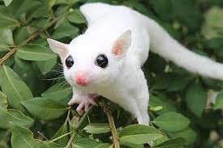
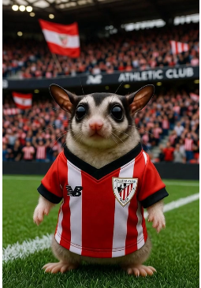
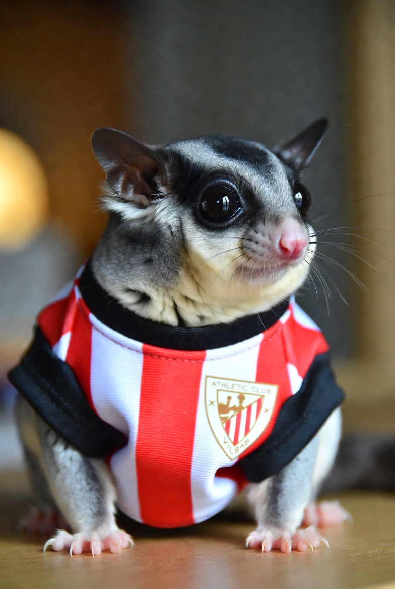

PETAUROS
- Los Petauros: Pequeños Acróbatas del Aire
- Que son los petauros?
- Los petauros del azúcar (Petaurus breviceps) son pequeños marsupiales planeadores nativos de Australia, Tasmania, Indonesia y Nueva Guinea. A pesar de su apariencia similar a las ardillas voladoras, son parientes lejanos de los canguros y koalas. Su nombre "del azúcar" proviene de su amor por los alimentos dulces como el néctar y la savia.
Miden entre 12-17 cm de cuerpo (con una cola igual de larga) y pesan apenas 90-160 gramos, ¡menos que una manzana!

- La evolución del vuelo sin alas
- El origen marsupial
- Hace aproximadamente 40-50 millones de años, los ancestros de los petauros eran pequeños marsupiales arbóreos que vivían en los densos bosques de lo que hoy es Australia. En ese entonces, el continente estaba cubierto de selvas tropicales y subtropicales.
- La presión evolutiva
- Estos pequeños mamíferos enfrentaban varios desafíos:
- Depredadores terrestres y aéreos (aves rapaces, serpientes)
- Competencia por alimento con otros animales arbóreos
- Necesidad de moverse entre árboles sin bajar al peligroso suelo del bosque
.jpg)
- ¿Qué tienen de especial?
- Maestros del planeo controlado
- Los petauros no vuelan, planean. Pueden:
- Deslizarse hasta 50 metros en un solo salto
- Controlar dirección y velocidad usando su cola como timón
- Cambiar de ángulo moviendo sus extremidades
- Aterrizar con precisión en troncos verticales
- Su cola prensil actúa como estabilizador y freno aéreo, permitiéndoles hacer giros de hasta 90 grados en pleno vuelo.
- Visión nocturna extraordinaria
- Sus ojos enormes (proporcionalmente, de los más grandes entre mamíferos) están adaptados para ver en la oscuridad casi total. Tienen una capa reflectante llamada tapetum lucidum que amplifica la luz disponible, haciendo que sus ojos brillen en la noche.
- Sociedad matriarcal compleja
- Viven en grupos de 7-12 individuos liderados por una hembra dominante. Duermen juntos en huecos de árboles, apilados unos sobre otros para mantener el calor. Esta conducta social es rara entre marsupiales pequeños.
AQUI LE DEJOS UNOS LINKS HA LAS SIGUIENTES COSAS:
SI QUIERE VER QUE TIPOS DE PETAUROS EXISTEN DEL A ESTA FOTO:
SI QUIERE VER EL MEJOR CONTENIDO SOBRE PETAUROS DELE A ESTA FOTO: